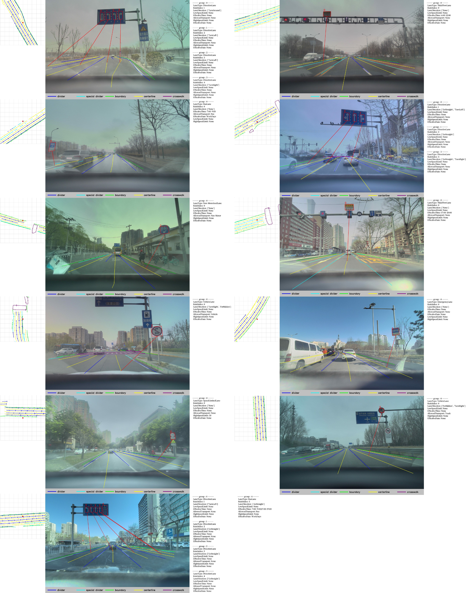
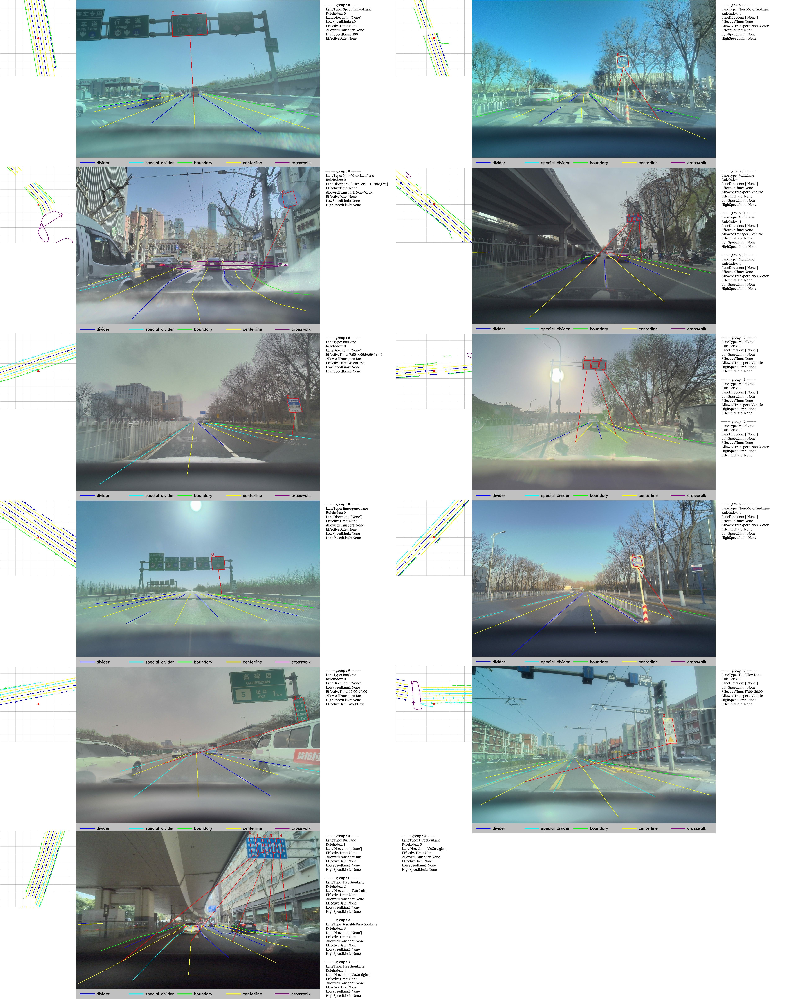
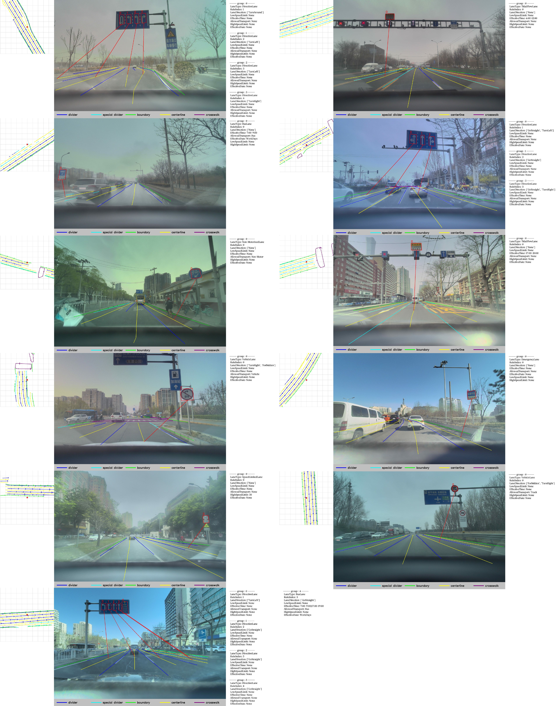
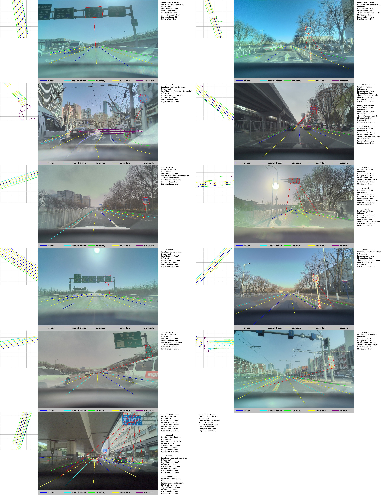

Abstract
Ensuring adherence to traffic sign regulations is essential for both human and autonomous vehicle navigation. While current benchmark datasets concentrate on lane perception or basic traffic sign recognition, they often overlook the intricate task of integrating these regulations into lane operations. Addressing this gap, we introduce MapDR, a novel dataset designed for the extraction of Driving Rules from traffic signs and their association with vectorized, locally perceived HD Maps.
MapDR features over 10,000 annotated video clips that capture the intricate correlation between traffic sign regulations and lanes. We define two pivotal sub-tasks: 1) Rule Extraction from Traffic Sign, which accurately deciphers regulatory instructions, and 2) Rule-Lane Correspondence Reasoning, which aligns these rules with their respective lanes. Built upon this benchmark, we provide a multimodal solution that offers a strong baseline for advancing autonomous driving technologies. It fills a critical gap in the integration of traffic sign rules, contributing to the development of reliable autonomous navigation systems.
Task Definition
Step1 ~ Step4 shows a case of driving by the rules. Step2 and Step3 demonstrates the specific role of two sub-tasks, respectively.
The ability to discern rules from traffic signs and to associate them with specific lanes is pivotal for autonomous navigation. As depicted in Figure above, traffic signs are primary indicators of lane-level rules. Our proposed task involves two core sub-tasks: 1) Extracting lane-level rules from traffic signs, and 2) Establishing correspondence between these rules and centerlines. Generally, vehicles follow the center of lanes. Therefore, we use centerlines to represent lanes. This approach mirrors human drivers' instinct to observe traffic signs and then relate the indicated rules to the lanes they govern.
Dataset: MapDR
Multiple lane-level rules of a single traffic sign are annotated in {key:value} format. Directed lines indicate the correspondence between rules and particular centerlines.
The majority of the data originates from Beijing and Shanghai, with additional scenes from Guangzhou. Figure above illustrates the geographic spread and variety of traffic signs.
We introduce the MapDR dataset, meticulously annotated with traffic sign regulations and their correspondences to lanes, as shown in Figure above. The dataset encompasses a diverse range of scenarios, weather conditions, and traffic situations, with over 10,000 traffic scene segments, 18,000 driving rules, and 400,000 images. Traffic signs typically have varying textual descriptions, text layouts, and positions on the road, which add complexity to the task.
The dataset reflects a natural long-tail distribution, with a prevalence of bus and direction lanes and a scarcity of tidalflow lanes. We primarily focus on traffic signs that indicate lane-level rules, collected from cities with the most complex and diverse traffic scenarios in China, ensuring realistic and representative data. All images have undergone privacy and safety processing to obscure license plates and faces. More comprehensive statistic of dataset and case demonstrations can be found in out paper.
Approach
Entire approach can be divided into two main parts: Rule Extraction from Traffic Sign (top) and Rule-Lane Correspondence Reasoning (bottom). Rule Extraction model consists of two sequential stages with the same structure VLE but unshared parameters, and the training procedure is independent.
Vectors can be represented as sequences of points, similar to words in sentences. Inspired by this, we designed MEE akin to BERT.
Experiment
VLE and MEE without any introduced technique serve as the baseline. Note that "∗" denotes models can not converge in the setting.
Diversity of MapDR
 



MapDR includes various types and layouts of traffic signs, which contain various driving rules. This presents challenges and necessity for accurately interpreting these traffic signs and associating them with the corresponding lanes.
BibTeX
@misc{chang2024drivingrulesbenchmarkintegrating,
title={Driving by the Rules: A Benchmark for Integrating Traffic Sign Regulations into Vectorized HD Map},
author={Xinyuan Chang and Maixuan Xue and Xinran Liu and Zheng Pan and Xing Wei},
year={2024},
eprint={2410.23780},
archivePrefix={arXiv},
primaryClass={cs.CV},
url={https://arxiv.org/abs/2410.23780},
}Access Dataset & Evaluation Code
Please contact changxinyuan.cxy@alibaba-inc.com for dataset and evaluation code.